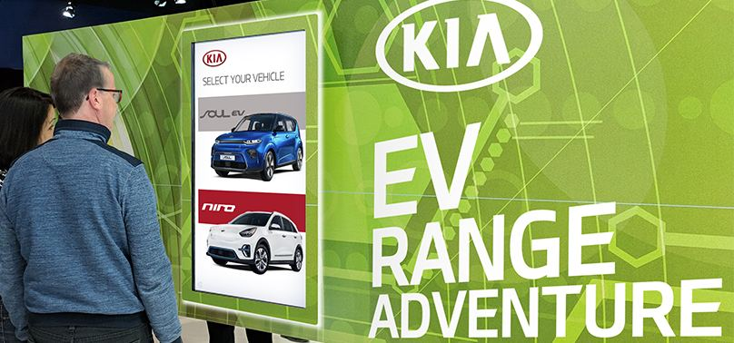

Kia
Kia Canadian Autoshows
Tools that turned range anxiety into a road trip.
Kia wanted to dispel myths about electric vehicles and take on range anxiety by promoting the extended range of its upcoming electric lineup.
We carried that message across the Canadian Autoshow circuit with tools that let people calculate real commutes from every major Canadian city to iconic landmarks and back.

As part of the toolkit we developed touch screen software and augmented reality windows that outlined the features of the new vehicles, helping the Kia team and dealerships across the country present the new roster at a glance.